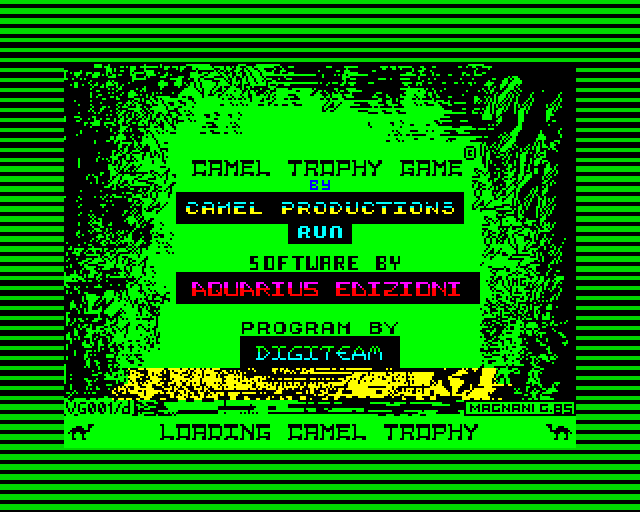
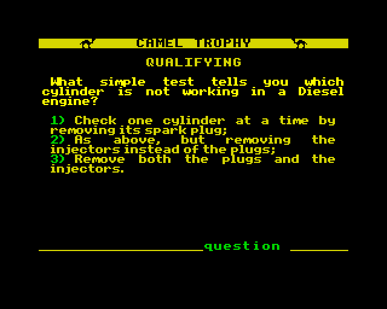
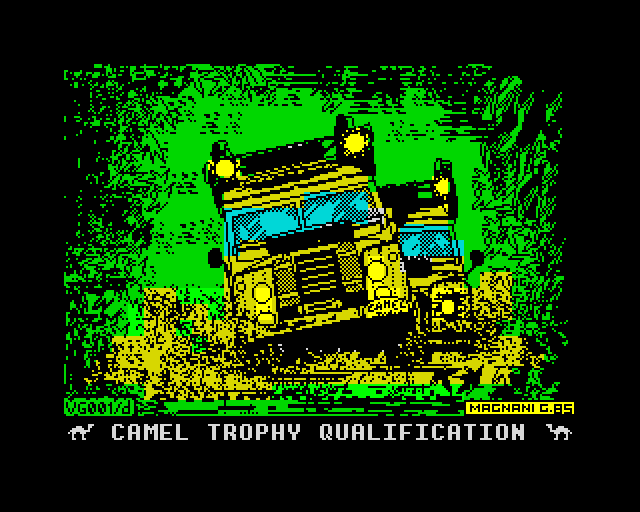
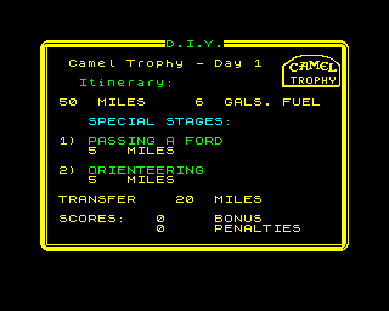
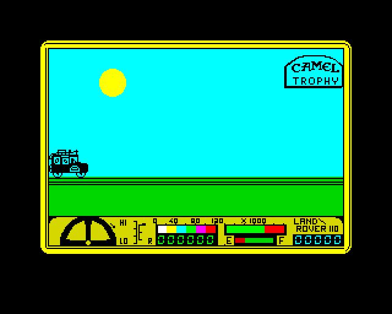

ZX SPECTRUM 48KCamel Trophy Game





How it plays
Italy's first big commercial Spectrum game arrives on one tape in three parts, and each part loads the next when you need it:
- Qualifying quiz: 32 questions on off-road mechanics, survival, navigation and first aid. Your score earns you a crew code.
- Route selection: Zaire, the Amazon, Borneo, or plan your own ten days in D.I.Y. mode.
- Driving game: rebuild your Land Rover each morning, then tackle fords, humps, bridge building and jungle forks.
The original is in Italian. This edition translates every screen into English, including captions and maps drawn into the pictures, by patching the original tape. The Italian tape is kept untouched in the repository.
Controls
| Start | Click the screen; LOAD "" is typed for you |
| Quiz | 1–4 to answer, Enter to confirm |
| Route | Y accepts a route |
| Driving | Kempston: arrow keys + Tab; keyboard mode: Q W E R T |
| Rebuild | 9 choose a part, 0 pick it up |
| Extras | Turbo load, one save slot, on-screen keyboard |